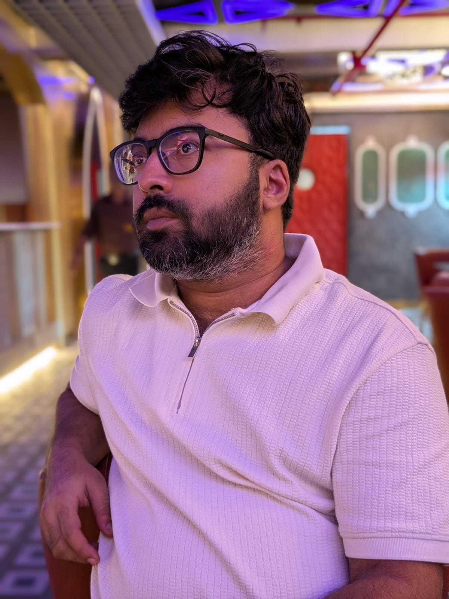

Core Area
Hybrid Human–Machine Learning
Exploring systems where humans and AI collaborate in learning, reasoning, and decision processes rather than operating in isolation.
PhD Researcher · Artificial Intelligence
I work at the intersection of human-centered AI, machine learning, and decision making — building intelligent systems that are not only powerful, but meaningful.

About
Hello, I’m Debodeep Banerjee, originally from Kolkata, India. I am currently pursuing my PhD in Artificial Intelligence with the University of Trento and the University of Pisa.
Before this, I completed a Master’s degree in Data Science from Sapienza University of Rome and an MSc in Statistics from the University of Madras.
My academic journey from statistics to AI has shaped a strong interest in intelligent systems that combine algorithmic strength with human judgment.
Outside academia, I enjoy literature, travelling, chess, and writing poems and short stories as a way to reflect and create.
Research
Core Area
Exploring systems where humans and AI collaborate in learning, reasoning, and decision processes rather than operating in isolation.
Theme
Studying how intelligent models can support robust, interpretable, and context-aware decisions.
Perspective
Keeping people in the loop where trust, usability, and judgment matter as much as predictive performance.
Journey
University of Trento and University of Pisa
Baker Hughes (Nuovo Pignone Tecnologie)
Project Consulting SRL — AI applications in video data
Sapienza University of Rome
University of Madras
Contact
For research, collaborations, teaching, or just a thoughtful conversation.